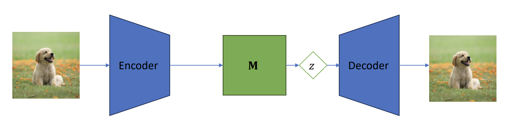
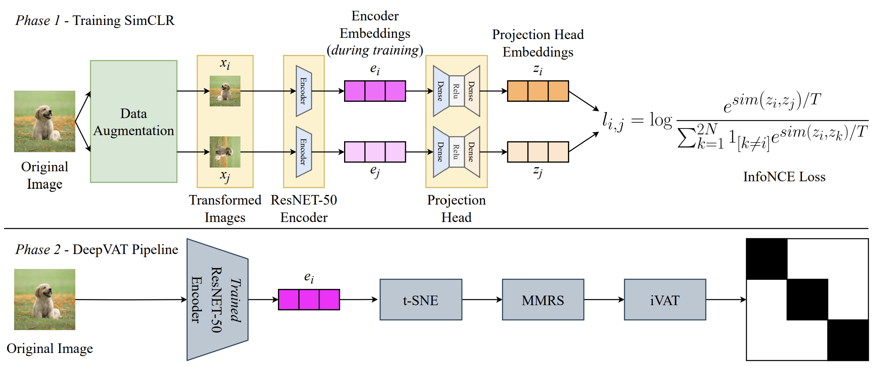
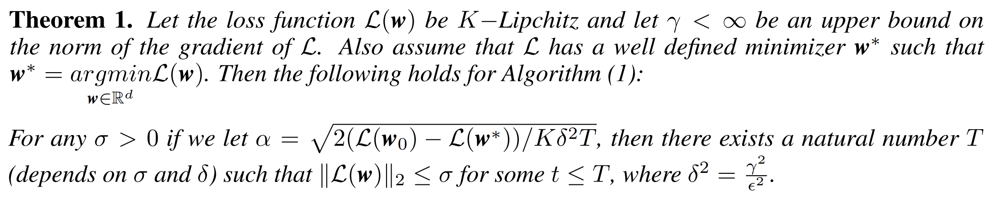
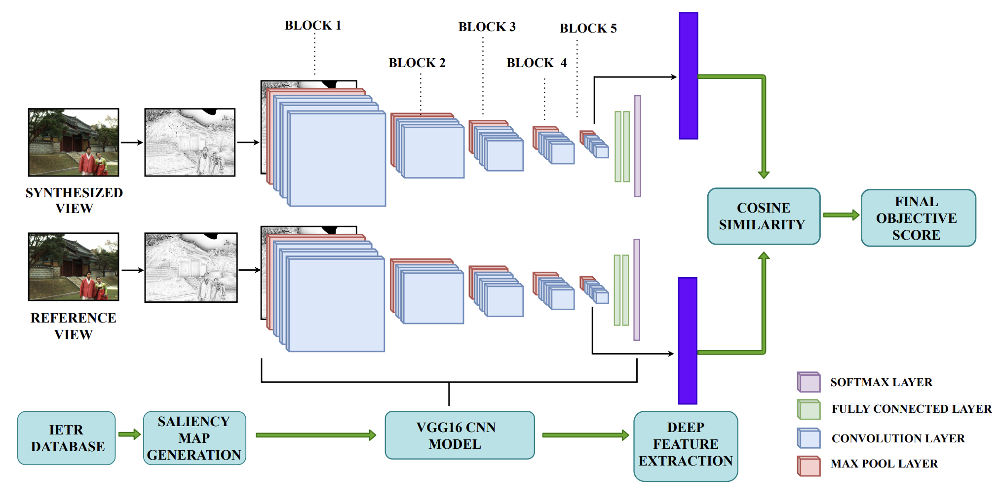

Hello! I am a Ph.D. scholar at the Robert Bosch Center for Cyber-Physical Systems (RBCCPS), Indian Institute of Science Bengaluru. I have the privilege of being advised by Prof. Punit Rathore for my doctoral studies. Notably, my Ph.D. is generously supported by the prestigious Prime Minister's Research Fellowship (PMRF). Prior to my current academic journey, I was a student at the Indian Institute of Technology Jammu (IIT Jammu), where I successfully completed my Master of Technology (MTech) degree in Computer Science and Engineering, specializing in Data Science.
Previously, under the mentorship of Prof. Satyadev Ahlawat, I worked on my Master's thesis, which involved development/creation of algorithms for detecting anomalies within dynamic graphs. The title of my thesis was "Eigenspace Based Anomaly Detection in Dynamic Graphs [PDF]."
For a more comprehensive insight into my research, academic journey, and accomplishments, I kindly invite you to review my CV.
In past, I've had the pleasure of conducting research at:
-
Ericsson Reserach, Gloabl AI Accelerator (GAIA), Dec 2020 - Jun 2021 with Dr. Shrihari Vasudevan and his amazing team.
-
Computer Architecture and Dependable Systems Lab (CADSL) at Indian Institute of Technology Bombay, winter 2019 with Prof. Virendra Singh.
Research Interests: My research pursuits center around computer vision and deep learning. Throughout my Ph.D. journey, my primary focus has been on learning efficient latent representation of complex, high-dimensional data. Specifically, my doctoral work revolves around desigining novel algorithms dedicated to acquiring cluster-friendly latent representations for various forms of high-dimensional data, including images, tabular data, and spatio-temporal data. My research not only involves the development of novel algorithms but also places significant emphasis on reinforcing these algorithms and their empirical findings through rigorous mathematical analysis.
Favourite Quote: "क्यों डरें ज़िन्दगी में क्या होगा कुछ ना होगा तो तज़रूबा होगा" ~ Javed Akhtar.
It translates to "Why be afraid of what will happen in life, if nothing happens then it will be an experience."
Publications
|
 |
Learning Low-Rank Latent Space Using Simple Deterministic Autoencoder: Theoritical and Empirical InsightsIEEE/CVF Winter Conference on Applications of Computer Vision (WACV) 2024, Hawaii, USA |
|
 |
DeepVAT: A Self-Supervised Technique for Cluster Assessment in Image DatasetsIEEE/CVF Internation Conference on Computer Vision Workshops (ICCVW) 2023, Paris, France |
|
 |
Convergence of ADAM with Constant Step Size in Non-Convex Settings: A Simple ProofPreprint (Submitted to IEEE ICASSP 2024) |
|
 |
Perceptual Quality Assessment of DIBR Synthesized Views Using Saliency Based Deep FeaturesIEEE International Conference on Image Processing (ICIP) 2021, Anchorage, Alaska |
In addition to my Ph.D. research, I have a keen interest in applied mathematics, particularly in the field of optimization theory. I am passionate about working on the convergence analysis of stochastic optimizers in highly general settings with minimal assumptions. If you share similar interests or would like to engage in discussions about my research areas, please feel free to reach out via email. I am always open to discussing and collaborating on these exciting topics!